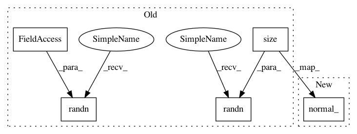

db09dc1fb503ab8f7de69fa23e8d38742bda8e90,ch07/lib/dqn_model.py,NoisyLinear,forward,#NoisyLinear#Any#,25
Before Change
nn.init.uniform(self.bias, -std, std)
def forward(self, input):
torch.randn(self.epsilon_weight.size(), out=self.epsilon_weight)
bias = self.bias
if bias is not None:
torch.randn(self.epsilon_bias.size(), out=self.epsilon_bias)
bias = bias + self.sigma_bias * Variable(self.epsilon_bias)
return F.linear(input, self.weight + self.sigma_weight * Variable(self.epsilon_weight), bias)
After Change
self.epsilon_weight.normal_()
bias = self.bias
if bias is not None:
self.epsilon_bias.normal_()
bias = bias + self.sigma_bias * self.epsilon_bias
return F.linear(input, self.weight + self.sigma_weight * self.epsilon_weight, bias)
In pattern: SUPERPATTERN
Frequency: 3
Non-data size: 5
Instances
Project Name: PacktPublishing/Deep-Reinforcement-Learning-Hands-On
Commit Name: db09dc1fb503ab8f7de69fa23e8d38742bda8e90
Time: 2018-04-27
Author: max.lapan@gmail.com
File Name: ch07/lib/dqn_model.py
Class Name: NoisyLinear
Method Name: forward
Project Name: PacktPublishing/Deep-Reinforcement-Learning-Hands-On
Commit Name: db09dc1fb503ab8f7de69fa23e8d38742bda8e90
Time: 2018-04-27
Author: max.lapan@gmail.com
File Name: ch07/lib/dqn_model.py
Class Name: NoisyFactorizedLinear
Method Name: forward
Project Name: PacktPublishing/Deep-Reinforcement-Learning-Hands-On
Commit Name: db09dc1fb503ab8f7de69fa23e8d38742bda8e90
Time: 2018-04-27
Author: max.lapan@gmail.com
File Name: ch07/lib/dqn_model.py
Class Name: NoisyLinear
Method Name: forward
Project Name: PacktPublishing/Deep-Reinforcement-Learning-Hands-On
Commit Name: b5e848af46b4a6fc21e718803dbf3d7c72afd72a
Time: 2018-04-27
Author: max.lapan@gmail.com
File Name: ch08/lib/models.py
Class Name: NoisyLinear
Method Name: forward